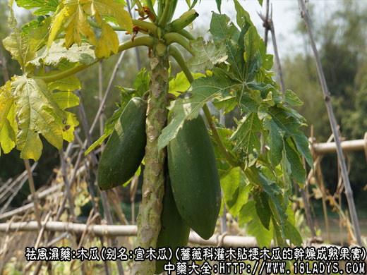
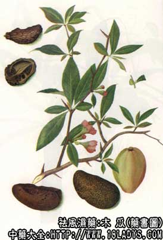

原文连接:https://www.daquan.com/post/2324.html



木瓜为常用中药，《名医别录》列为中品，现商品分川木瓜，云木瓜，山木瓜三种。习惯认为川木瓜品质较好。
别名：宣木瓜。
来源：川木瓜、云木瓜为蔷薇科植物灌木贴梗木瓜（又名贴梗海棠）的干燥成熟果实。山木瓜为蔷薇科植物灌木榠楂（又名木李）的干燥成熟果实。多为栽培，亦有分布。
产地：川木瓜主产于四川灌县，安徽宜城，湖北资丘，湖南慈利，浙江淳安等地。云木瓜主产于云南、贵州、西藏等省。山木瓜主产于湖北、湖南、山东等省。
性状鉴别：川木瓜：多纵切成两瓣。长约3～8厘米，宽约2～3.5厘米，厚约1～2厘米，外表皮棕红色或紫棕色。满布不规则的折棱皱沟，纵切面边缘向内卷曲。果肉黄棕色或红棕色，中心有子房数室，由室壁间隔，完整的壁隔内含有多数略三角形红棕色种子，果肉坚硬。气微味酸涩。云木瓜：体形与川木瓜相似，唯体形稍大，表皮不及川木瓜皱缩紧密、质略轻泡。
山木瓜：又名光木瓜。亦多切为两瓣。长约5～8厘米，宽约2.5～4.5厘米，外表皮棕红色光滑无皱，一端有果柄痕，另一端有花萼凹痕。断切面略下陷呈浅槽状，果肉粗糙呈小颗粒状，中有子房数室，内含种子多数。种子亦棕红色，三角形，但略显瘦小，质坚硬沉重。气微味酸涩。
川、云木瓜以色紫红、皮皱缩紧密，质坚实为佳。山木瓜以块瓣均匀，色紫红、坚实者为佳。
主要成分：含皂甙、苹果酸、酒石酸、柠檬酸、丙种维生素和鞣质等。
药理作用：1、祛湿、舒筋，似有缓和胃肠平滑肌痉挛和四肢肌肉痉挛的作用；2、抗利尿，临床观察认为有较明显的抗利尿作用。
炮制：切片，生用。
性味：酸温。
归经：入肝、脾经。
功能：平肝、舒筋、和脾、化湿。
主治：湿痹、脚气、霍乱、吐泻、腹痛、转筋。
临床应用：为治疗由湿引起的筋病的常用药。
1、用于治疗由暑湿引起的筋病。例如夏季因饮食不慎，感受暑湿（主要为致病微生物起作用），发生剧烈呕吐，腹泻，并有小腿腓肠痉挛（前人称为霍乱转筋）可用木瓜配藿香、木香、砂仁等，既止吐泻，又可缓解小腿腓肠肌痉挛。从现代医学观点看，所谓霍乱转筋，是由于患急性胃肠炎时，呕吐过甚，氯化物排出过多，引起体内电解质平衡失调，产生碱中毒，因而出现手足肌肉抽搐、痉挛。同时，由于剧烈腹泻，肠道内含钙的分泌液排出过多，造成低血钙，也是引起抽搐的原因，而木瓜能治疗转筋（肌肉痉挛），可能是由于具有缓和肌肉痉挛的作用。
由贫血、血虚引起的肌肉抽搐，也可用木瓜，但须配当归、白芍等。
2、用于治疗因风湿引起的下肢肌肉无力、腰膝萎弱。关节疼痛，可配虎骨、独活等，如虎骨木瓜酒，适宜于慢性风湿性关节炎用，但急性期不宜用。凡用风湿药酒，都是为了借助酒的温通（活跃血循环）的作用，加强镇痛、消炎、去肿的效能，患关节炎而有关节红肿、血循环较差者（但无心脏疾患），可以略饮药酒，但如合并有心脏病、肝病、高血压、发热，或体质素有阴虚火盛，或平日不惯喝酒的，都不要饮用药酒。
3、用于治疗寒湿引起的腹痛、腹泻，配吴茱萸、炙草、小茴香、生姜等，方如木瓜汤。
使用注意：内有郁热，小便短赤者不宜用木瓜，因为木瓜有抗利尿作用，服后小便减少。
处方举例：木瓜汤（《直指方》）:木瓜9g、吴茱萸6g、小茴香9g、生姜9g、炙草6g，水煎服。